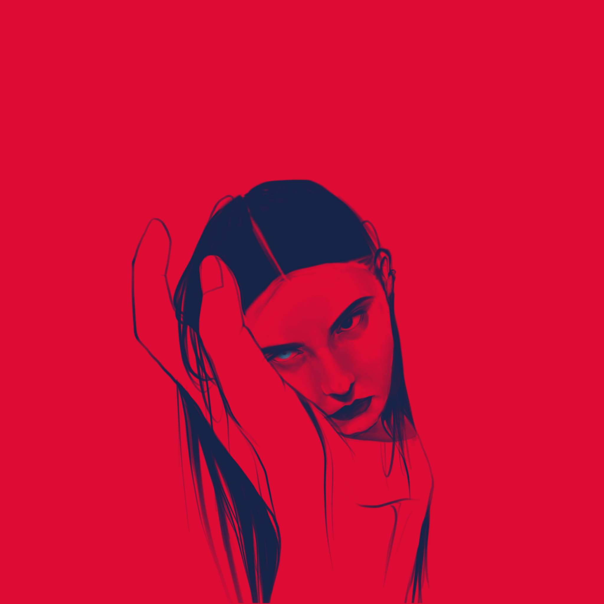
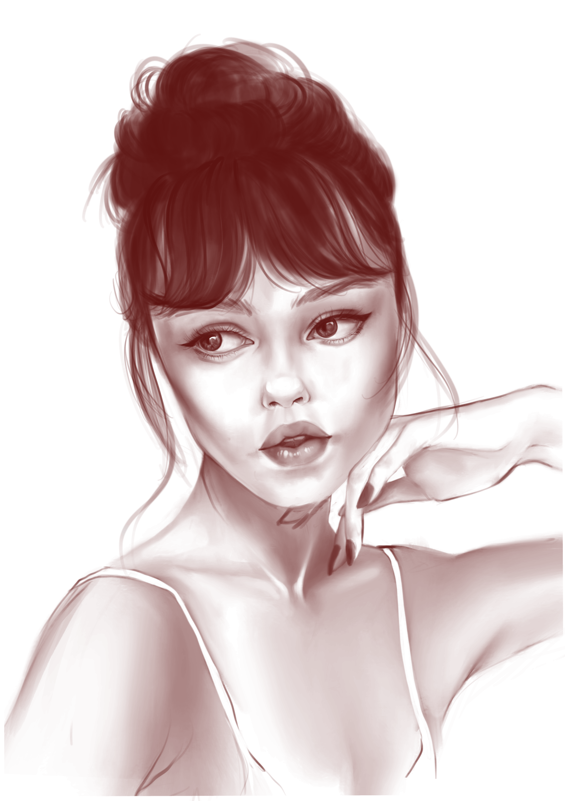
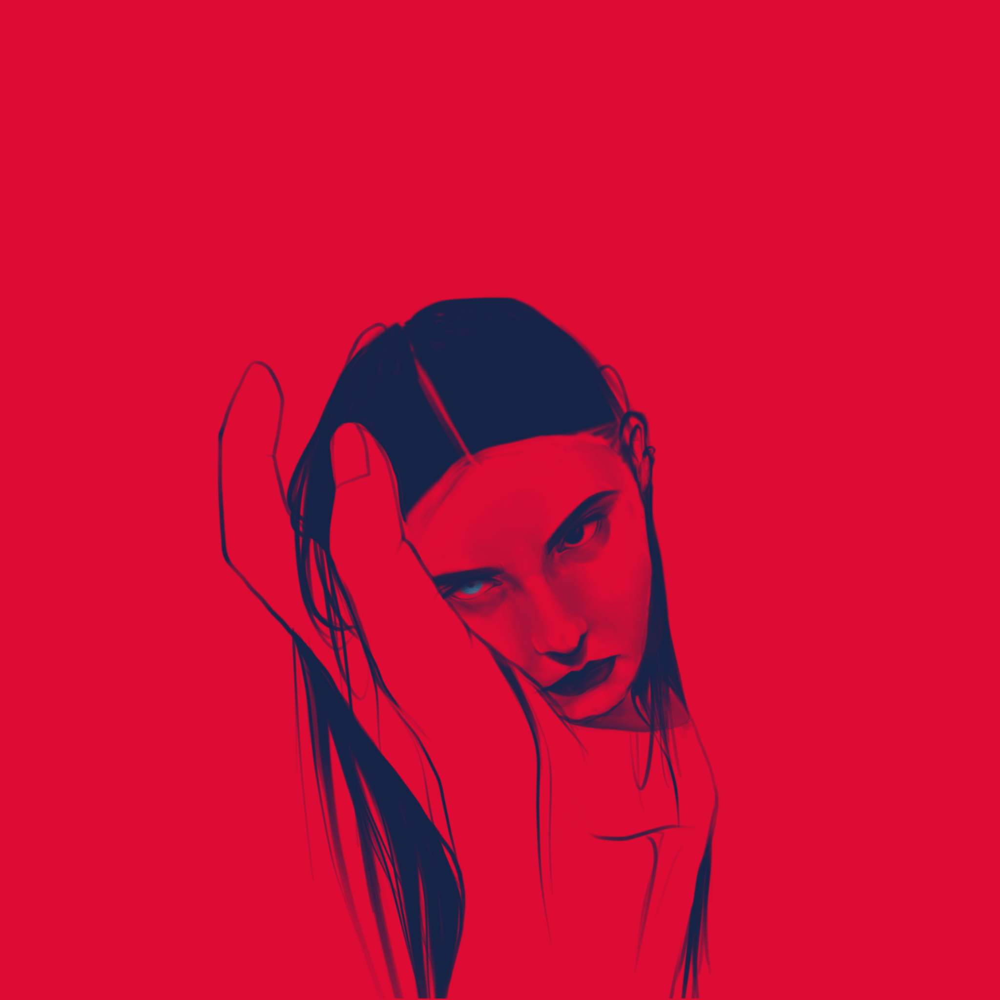
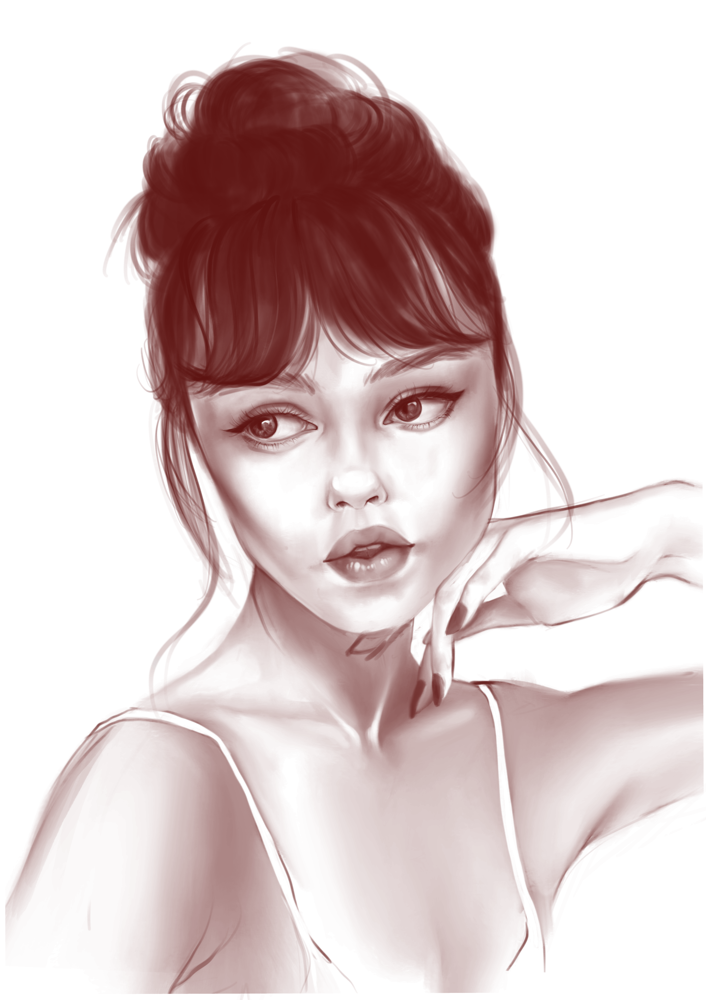

PLAY
SPRING 2018 - Fall 2019
A collection of drawings and videos for fun
Portrait Drawings
Drawn using the Procreate app on the iPad with Apple Pen.

 



a story about my dog
Procreate on iPad & After Effects
Music video for Coduroy Dreams by Rex Orange County
After Effects